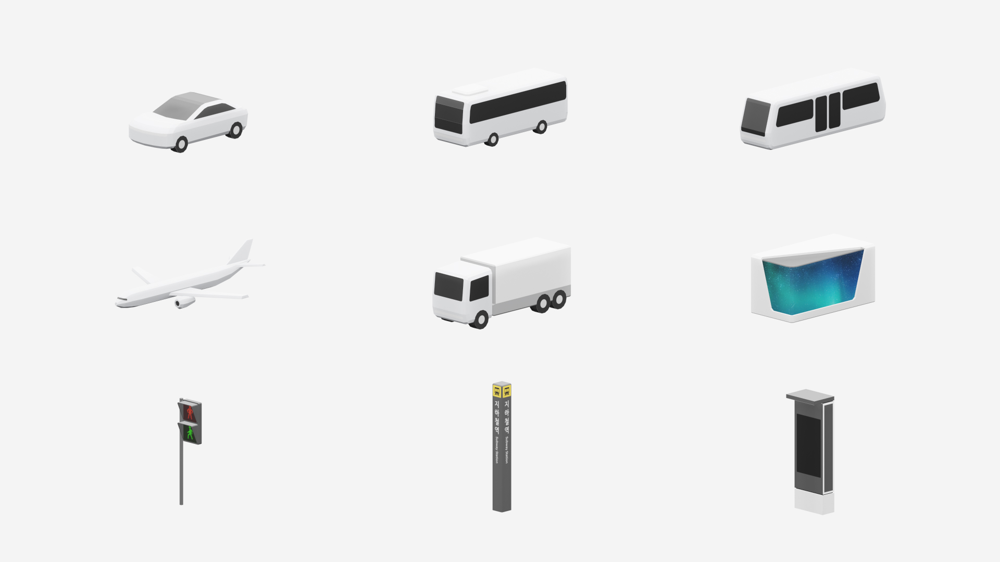
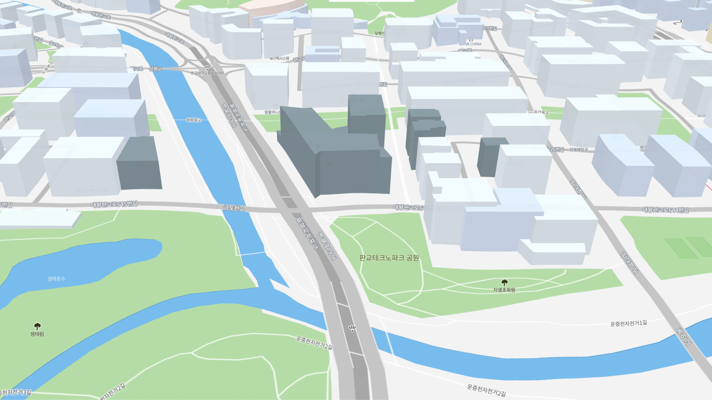
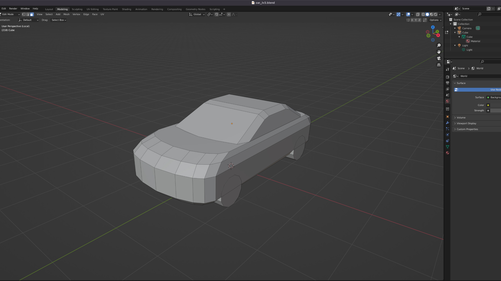
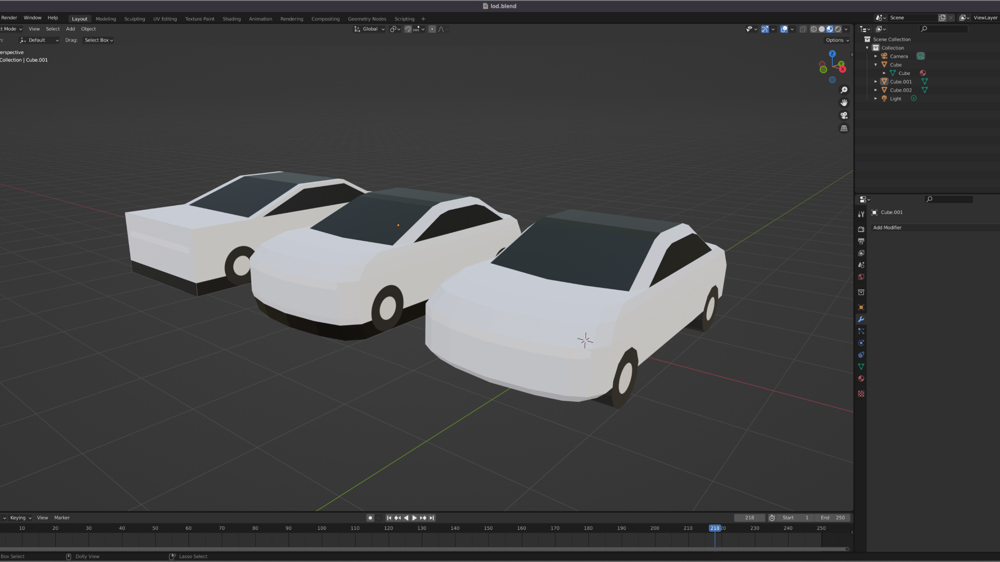
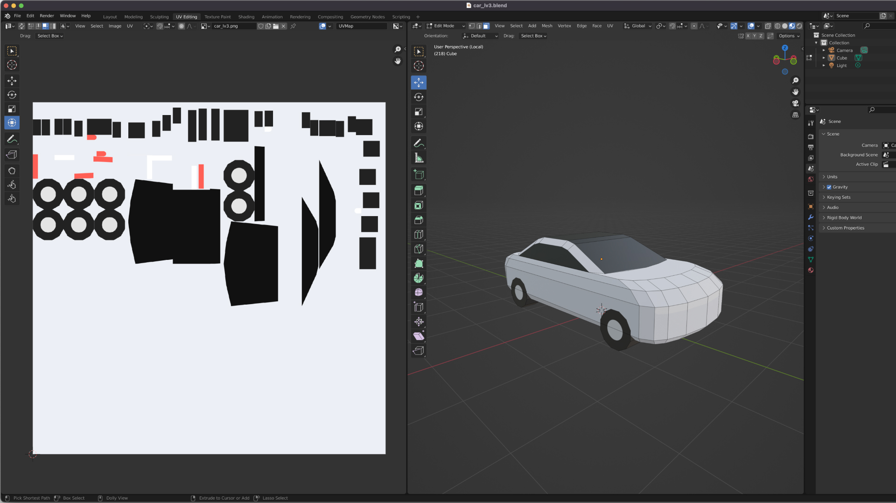
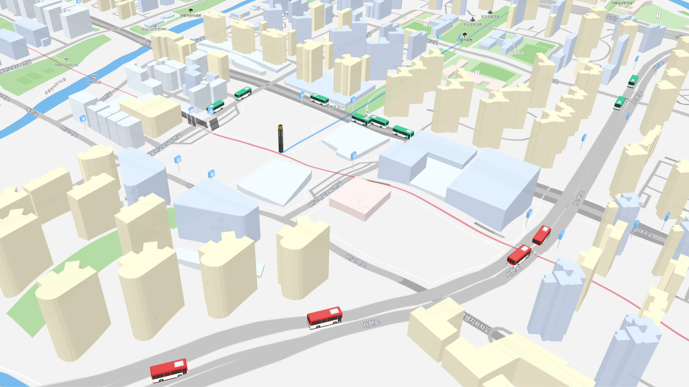
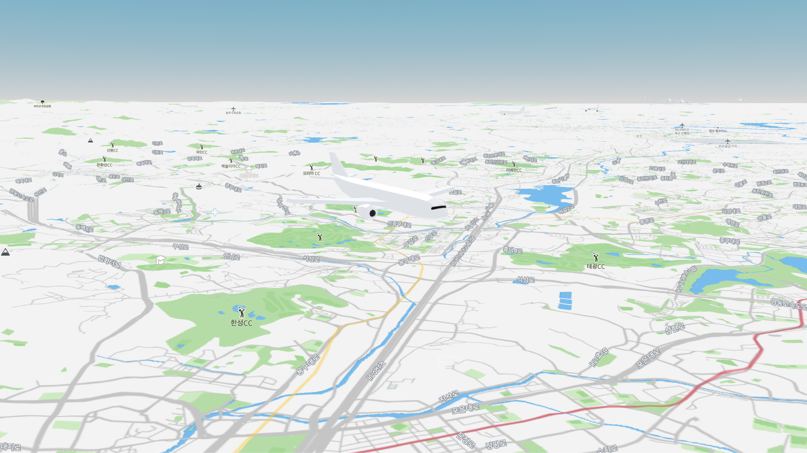

위치기술 기반 디지털트윈 플랫폼인 오브로는 현실 세계의 여러 데이터를 3D 지도 상에 실시간으로 반영하고 있습니다. 오브로 내에서 유기적으로 움직이고 다양한 데이터를 반영하는 대중교통 및 인프라 오브젝트들에 대한 3D 모델링을 진행했습니다.

웹 기반의 3D 지도에 최적화된 모델링
3D 오브젝트들이 위치하게 될 오브로 환경은 맵박스를 기반으로 하는 웹 기반의 3D 지도입니다. 웹 기반의 3D 지도는 사용자들의 서비스 접근성이 높은 대신 고성능 그래픽을 구현하기 어려워 모델링의 Vertex를 최대한 줄이는 것이 중요했습니다.

단순하면서 특징적인 디자인
모델링의 Vertex를 줄이기 위해 오브젝트의 복잡한 요소들을 최대한 배제시켰습니다. 동시에 각 오브젝트의 특징적인 요소를 살려 최소한의 형태로 각각을 구분할 수 있도록 설계했습니다. 또 카메라 줌 레벨에 따라 형태를 단순화하여 맵 로딩 속도를 최적화하는 작업도 함께 진행되었습니다.

Vertex 수를 최소화한 디자인

줌 레벨에 따른 형태의 단순화
단순화된 형태를 보완하는 UV맵핑
UV맵핑을 활용하여 모델링의 단순화된 형태를 보완하고 오브젝트와 지도의 시각적 일관성을 유지했습니다. 특히 줌 레벨에 따라 형태를 단순화 시키는 상황에서 UV맵핑은 오브젝트의 더 많은 디테일 요소를 담을 수 있게 했습니다.

서비스 특징에 맞게 커스터마이징되어 적용
완성된 오브젝트 모델링은 버스, 지하철, 항공 등 각 오브로 서비스의 특징에 맞게 커스터마이징되어 적용되었습니다. 서비스에 적용된 오브젝트들은 현실 데이터를 바탕으로 유기적으로 움직이고 사용자들의 의도에 따라 실시간으로 상호작용합니다.

버스, 지하철 앱에 적용된 모습

항공 앱에 적용된 모습
새로운 툴을 활용한 새로운 도전
이번 프로젝트는 3D디자이너가 아니었기에 모델링 툴과 기술들을 새롭게 공부해야 하는 새로운 도전이었고, 초기에는 어려움이 많이 있었습니다. 그럼에도 불구하고 각각의 오브젝트를 한 개씩 작업해 나가며 오브로의 초기 컨셉을 완성할 수 있었고, 개인적으로는 이 프로젝트를 통해 새로운 분야에 대해 앞으로도 적극적으로 도전할 수 있는 자신감을 얻게 되었습니다.